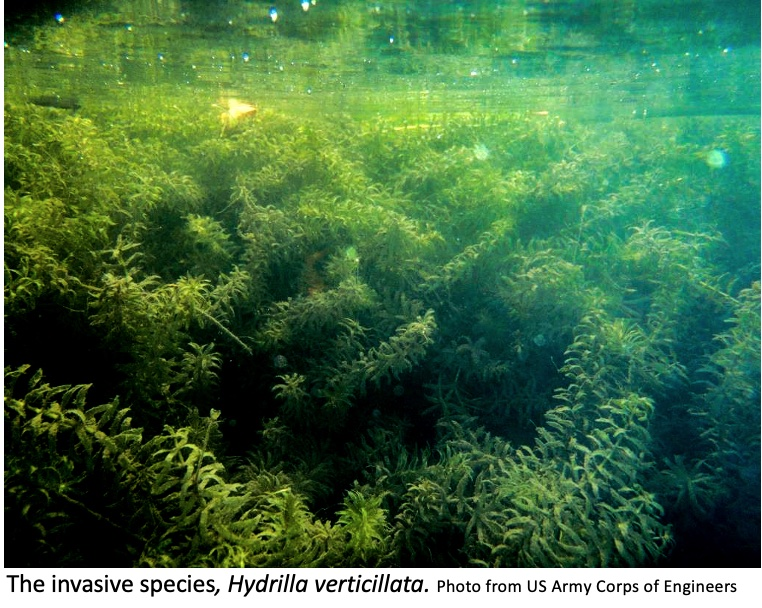

Past Research

Hydrilla verticillata is an invasive aquatic plant that poses a threat to freshwater ecosystems across the United States. The invasive species is known to rapidly infest lakes, causing potentially dangerous chemical changes in the ecosystem. Hydrilla blocks sunlight, thereby influencing the light penetration, heat distribution, and biological processes of the lake. By occupying a majority of the lake with thick foliage, native plant species are outcompeted by Hydrilla, which limits food resources for native wildlife. In order to reduce Hydrilla, 45 Ctenopharyngodon idella, commonly known as grass carp, were released into Lower Lake on Sweet Briar Campus in April 2018. In order to assess if the grass carp were influencing the Hydrilla, a manipulated experiment (NET) was set up to exclude the existing carp from a set area. The NET area was to act as the control in this experiment. Additionally, an experiment (OUT) was set up to properly eliminate and isolate variables in the project; the OUT area acted as the manipulated experiment. A suite of chemical indicators were tested within both the NET and OUT to compare the influence of Hydrilla on the aquatic chemistry of the lake. Preliminary findings demonstrated that in 2018, Hydrilla was less abundant than in 2016 and 2017 according to biomass data. Visual surveys revealed that Hydrilla was only present in the NET area of two of the five exclosures in the lake. pH was consistently higher in the NET side compared to the OUT side of exclosures. Compared to OUT, the NET area had significantly lower dissolved oxygen at the bottom of the lake when Hydrilla was present. Hydrilla also retained daytime heat, demonstrated by higher nighttime temperatures in the NET area of the exclosures. Hydrilla did not influence other chemical indicators, including nitrogen, phosphorus, light, and turbidity. Conductivity showed a relationship with Hydrilla growth, but not in a matter that was harmful to the ecosystem. Overall, preliminary visual surveys and sonar supported that Hydrilla has been diminished by the carp, eliminating the dangerous chemical changes caused by the invasive plant in the lake. Hydrilla is a nuisance to many freshwater ecosystems; however, findings confirm that releasing grass carp is an efficient method of biomangement for infested ecosystems.
How do species coexist and affect their ecosystem? Traditionally, scientists studied this question by examining species interaction alone. However, stage-structured feeding can better predict predator-prey interactions within a food web by accounting for the variability in predation across life stages. For example, aquatic insects such as chironomid midges feed on the bottom of rivers and lakes as larvae, move through the water column as pupae, and emerge as flying terrestrial adults. However, while it is known that fish target specific life stages of these prey, it is not known whether this is related to fish size. Therefore, in this study we examined the relationship between fish size and proportion of non-larval insects.Controlled Monitoring of Hydrilla in Lower Lake
Summer Honors Research 2018
Sweet Briar, Virginia
Influence of Fish Size in Stage-Structured Feeding
REU Internship, University of South Dakota
Vermillion, South Dakota
Preliminary results found a positive relationship between size and proportion of nonlarval insects in Bluegill (Lepomis macrochirus), Spotfin Shiner (Cyprinella spiloptera), and Johnny Darter (Etheostoma nigrum). The relationship between size and proportion of non-larval insects did not appear in all fish species.Data overall supported the hypothesis that fish size and proportion of non-larval insects is related,but it is variable among species.